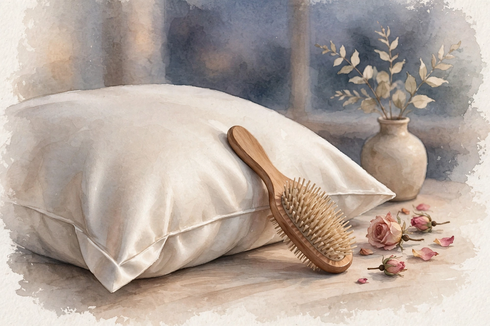

寝ている間の髪の摩擦を減らす工夫

朝起きたときの髪の広がりや寝ぐせは、寝ている間の髪の状態と関係しています。人は寝ている間に何度も寝返りを打ちます。そのたびに、髪と枕が擦れ合っています。この記事では、寝る前にできる小さな工夫を整理します。
一番の基本は「乾かしてから寝る」
濡れたまま、あるいは半乾きのまま寝ると、髪が枕に押しつけられた形で乾き、寝ぐせがつきやすくなります。ドライヤーで根元まで乾かしてから寝ることが、朝の手間を減らす一番の基本です。寝ぐせを直す側の工夫は別記事「朝の寝ぐせ直しの手順」で紹介していますが、そもそも寝ぐせを軽くする側の工夫がこちらです。
乾かすときは根元を中心にしてください。毛先だけ乾いていても、根元に水分が残っていると、寝ている間に形がつきやすくなります。触ってみて、根元に湿り気がなければ大丈夫です。
髪の「置き場所」を決める
ロングヘアの方は、寝るときの髪の置き場所を決めておくと、寝返りのたびの擦れが減ります。髪を枕の上の方に流しておく、ゆるくまとめておく、といった方法です。きつく結ぶと結び目に負担がかかるため、ゆるさが前提になります。結び方の工夫は、別記事「髪の結び方と結び跡のつきにくい工夫」でも紹介しています。
ショートヘアの方は、まとめる長さがない分、乾かし方と枕カバーの当たり方が中心になります。どちらの場合も、「寝る前の状態を整える」という考え方は共通です。
枕カバーの素材と、洗う頻度
枕カバーは、髪が滑りやすいなめらかな素材と、綿のような素材とで、朝の髪の感じ方が違う、という声をお客様から聞くことがあります。どちらが正解という話ではなく、自分の髪の広がり方と照らして選ぶ材料です。素材の表示を見て、試してみる価値はあります。
枕カバーは、皮脂や整髪料がつく場所でもあります。洗う頻度の目安を持っておくことも、頭皮まわりの清潔を保つ生活の工夫のひとつです。寝ている間の髪の扱いは、特別なアイテムよりも、乾かす、置き場所、カバーの3点をそろえることが基本だと私は考えています。
寝相や寝具の好みは人それぞれですから、この記事の工夫は「全部やる」ものではありません。乾かしてから寝る、という基本だけでも朝の感じ方は変わります。余裕のある日に、髪の置き場所や枕カバーの素材など、ひとつずつ試してみてください。合うものだけを残していくのが、続けられる工夫の選び方です。
朝起きたときの髪の状態は、前の晩の過ごし方の記録でもあります。寝ぐせが強い日が続くようなら、乾かし方が足りていないのか、寝ている間の擦れが増えているのか、原因を分けて考えてみてください。現場でも、お客様の朝の困りごとは、夜の手順の見直しで軽くなることが多いと感じています。夜と朝は、ひと続きのケアです。
枕の高さや硬さとの関係を気にする方もいますが、髪の観点では、まずは乾かし方と置き場所が先です。寝具を買い替える前に、今ある環境でできる工夫を試してみてください。髪を乾かす、置き場所を決める、カバーを清潔に保つ。この3つは今夜からできることです。また、髪の長い方は、寝る前に軽くブラッシングしてから寝ると、寝ている間の絡まりが減ります。もつれたまま寝ると、朝のブラッシングで引っ張る回数が増えます。夜の最後のブラッシングは、朝のための準備でもあるのです。
出張や旅行で宿に泊まる日も、基本は変わりません。根元まで乾かして寝る。このひとつを守るだけで、翌朝の身支度の時間は読めるようになります。
季節によっても、寝ている間の髪の感じ方は変わります。乾燥する季節は広がりやすく、湿気の多い季節は寝ぐせがつきやすい。季節ごとに合う工夫は違いますから、季節の変わり目に、夜の手順を一度見直してみてください。
セラフィナ「寝る前のひと手間で、朝の髪が変わるんだね。乾かすのがまず基本だよ」

セラフィナ｜美容の道具箱の案内役
「量と表示が分かれば、美容は失敗しない。」——セラフィナと白猫のモコが、買う前のチェックポイントを案内します。綺麗になりたい気持ちに正直に、でも表示は冷静に読むのが、このサイトの約束です。